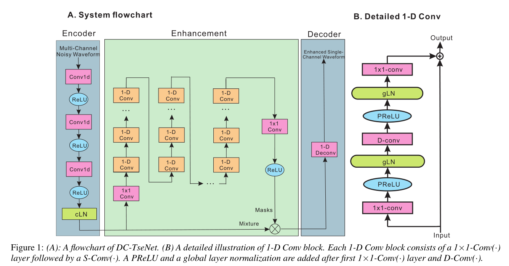
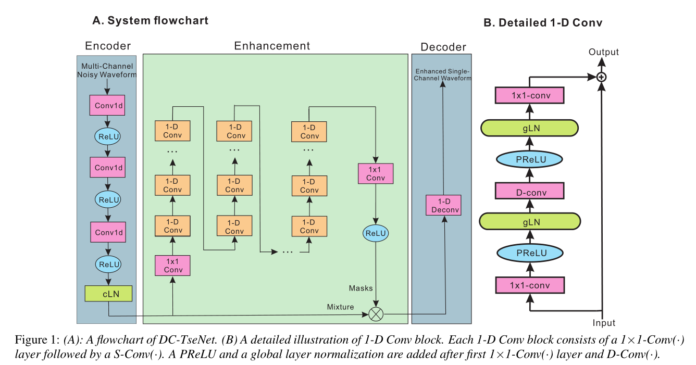
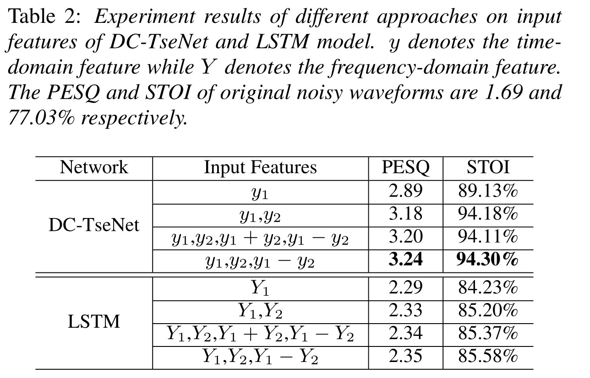
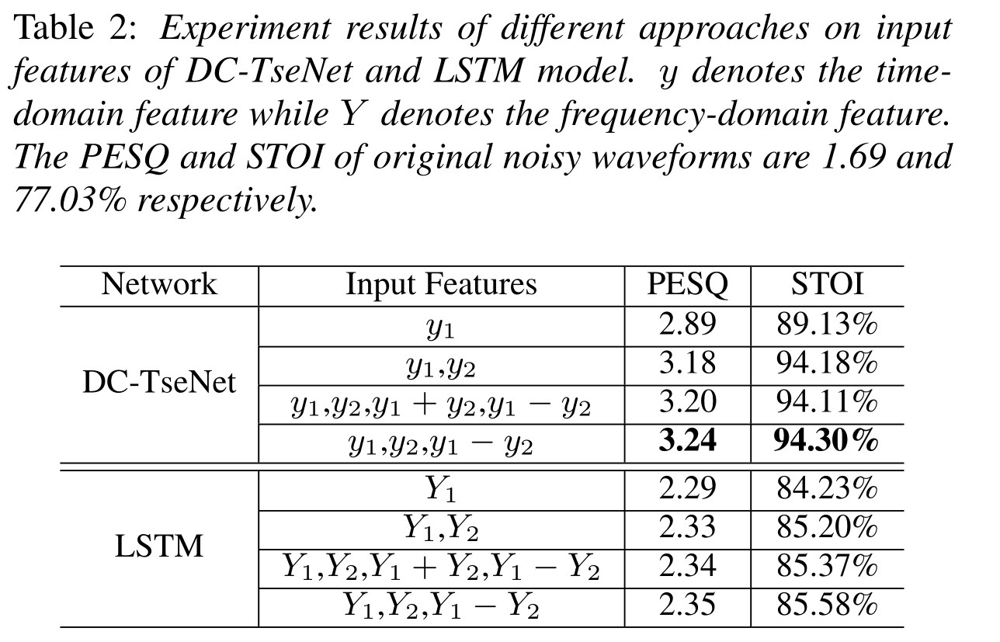

DC-TseNet: A Dual-Channel Time-Domain Speech Enhancement Network
Authors: Yihui Fu, Sining Sun, Ke Wang, Lei Xie
Abstract: In this paper, we propose an end-to-end dual-channel time domain speech enhancement approach named DC-TseNet for devices with multiple channels such as mobile phones in far-filed scenario. First, we extend TasNet from time-domain audio separation task to time-domain speech enhancement task. An Encoder-Separation-Decoder structure based end to end speech enhancement network is raised to realize our goal. Second, we try to explore the most effective way to utilize inter-channel information in time domain, such as inter-channel concatenation, summation and difference. Our proposed DC-TseNet can enhance speech in time domain directly and take advantage of spacial information. Experimental results demonstrate that the proposed DC-TseNet gives consistently better performance than single-channel case and frequency-domain approaches.
DC-TseNet Architecture:

Noisy (Channel1)
Noisy (Channel2)
Enhanced (DC-TseNet)
Enhanced (LSTM)

Enhancement Samples:
Note: All samples are enhanced using input feature combination of "y1, y2, y1-y2" (DC-TseNet) and "Y1, Y2, Y1-Y2" (LSTM).
Enhancement Performance:

